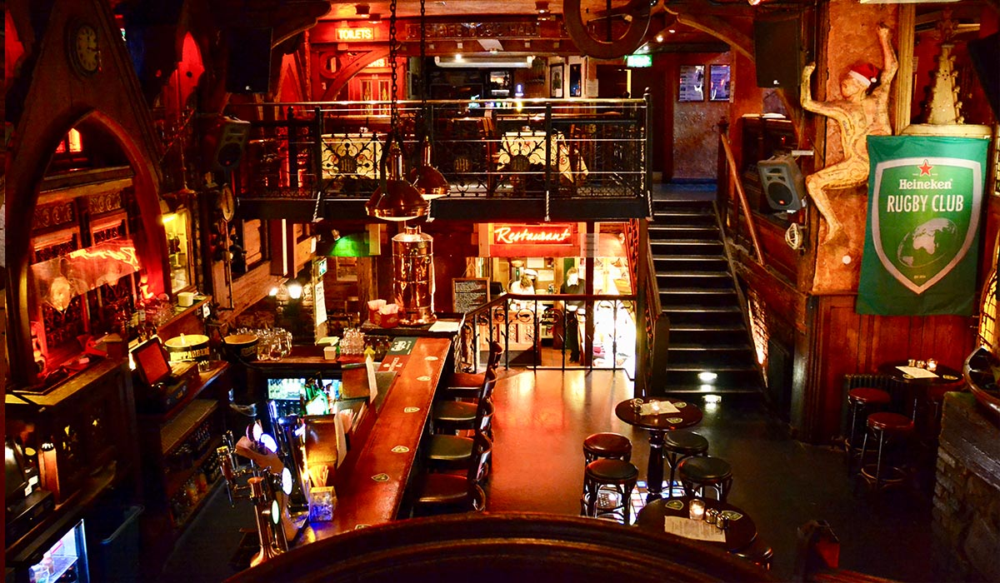
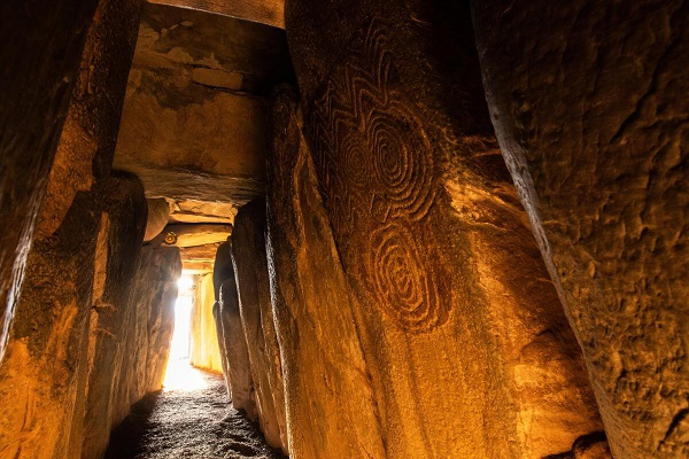
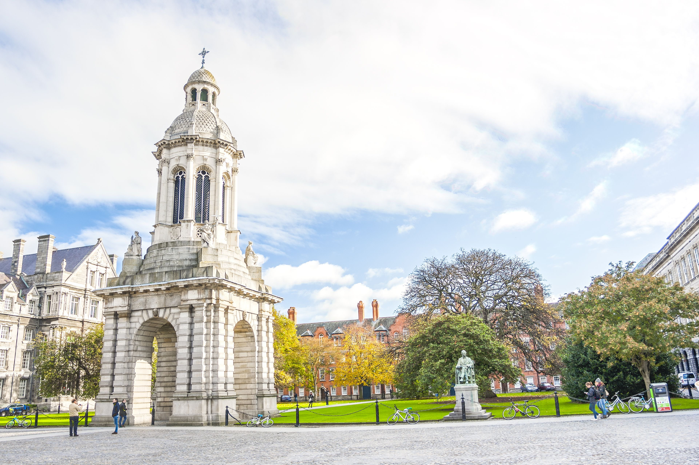
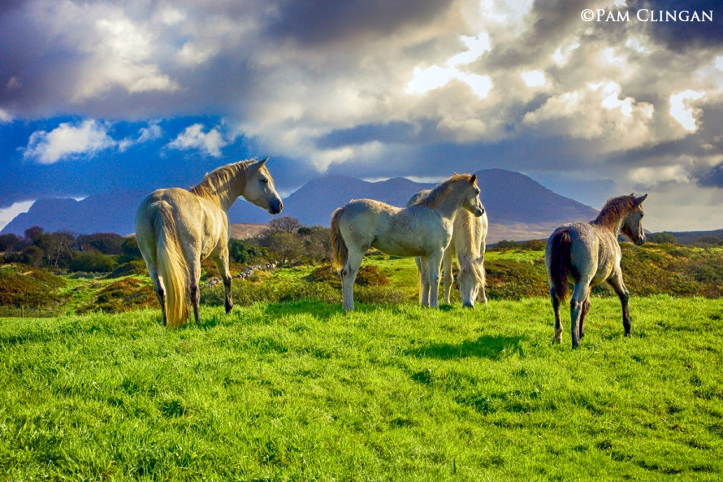
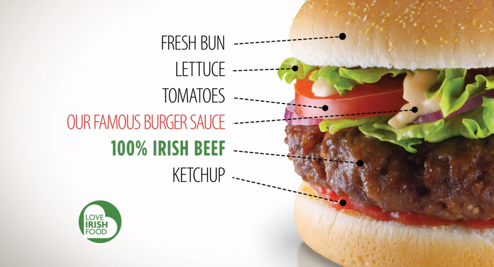
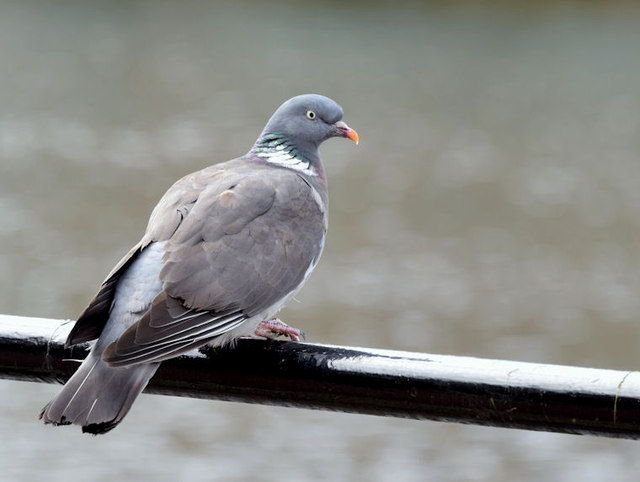

Ireland
Pubs
Tours
Out of Dublin, Ireland
 
Out of Galway, Ireland

Horseback Riding
Historical Sites
Dunguaire Castle
Best Burgers Ever
Wildlife
Pigeon Count: 10
Seagull Count: 4
Dinners Lost to Local Fauna: 0